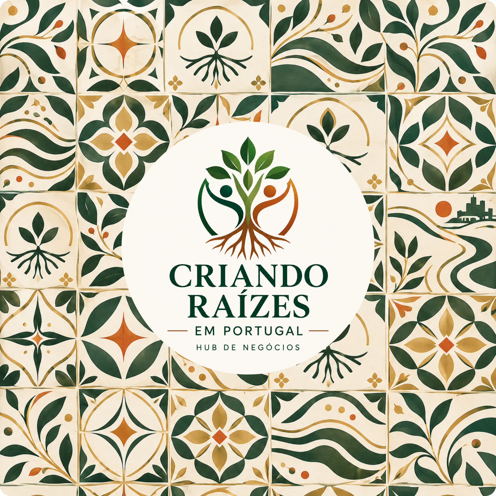

Porto NORTE · INOVAÇÃO
Polo de tecnologia, indústrias criativas e ecossistema empreendedor.

O hub acompanha-o em diferentes territórios — cada um com a sua economia, comunidade e ritmo. Descubra onde a sua raiz pode florescer.

Polo de tecnologia, indústrias criativas e ecossistema empreendedor.
Capital de conexões globais, investidores e comunidades estrangeiras.
Universidade, talento jovem e investigação aplicada.
Território de acolhimento, turismo e empreendedorismo familiar.
O território não é apenas geografia: é rede, ritmo, oportunidades e comunidade. A nossa abordagem procura ligar cada pessoa ao contexto certo para o seu momento.
Encontrar a minha porta de entrada →